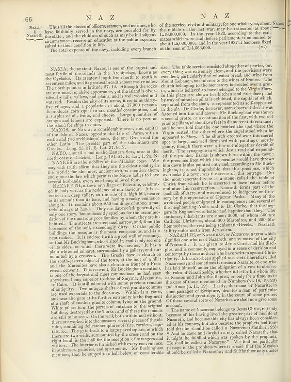

Source · scan and Parse blocks
Layers 2

Parse text by block reading order
- 0Page-header66
- 1Page-headerNAZ
- 2Page-headerNAZ
- 3TextNaxia
- 4TextNazareth.
- 5TextThus all the classes of officers, semen, and marines, who have faithfully served in the many, are provided for by the state; and the children of such as may be in indigent circumstances receive an education at the public expense, suited to their condition in life.
- 6TextThe total expense of the navy, including every branch
- 7Textof the service, civil and military, for one whole year, about Nazas the middle of the last war, may be estimated as about 1,18,000,000: in the year 1927, according to the existence which were laid before parliament. It assumed to about 3,400,000/00: and in the year 1537 it has been fixed at the sum of LA,663,000. (a)
- 8TextNAXIA, the ancient Nazos, is one of the largest and most fertile of the islands in the Archeology, known as the Cyclades. Its greatest length from north to south is several miles, and its greatest breadth about twelve miles. The north point is in latitude 37.12. Although there was one of a most qualitative opportunity yet the island is divertified by hills, valleys, and plains, and is well wooded and western. Besides the city of the name, it contains thirty- five villages, and a population of about 17,000 persons. It produces core equal to our monthly consumption, and a square of the fruits, and cheese. Large quantities of oranges and lemons are exported. There is no port on the island for July later.
- 9TextNAXOS, or NAXIA, a considerable town, and capital of the lake of Naoxe, opposite the lake of Peru, with a cudal and two ambishaby’s seen, the one check out the other Latin. The greater part of the inhabitants are Greek, Lilly, 25.13. E., Lae 37.6.N.
- 10TextNAXO, a small island in the Eastern Soss, near to the north coasts of Golden, Long Bay, 34. 2. Lat. 1. 28. N.
- 11TextNAXIESS are the majority of the Malabra coast. We may with truth affirm that they are the oldest notably in the world, for the mean ancient written mention them, and onto the far which permits the Mayre ladies to have several islands, ever once being allowed four.
- 12TextNAZARRUH, a new or village of Palestin, celebrated in holy writ as the residents of our Season. I it is situated in a deep valley, on the side of a light hill, in a deeper to his summit than the base, and having a rocky eminence along it. It contains about the buildings of stone, a major tel always a land, and very own, but sufficiently spacious for the cosmome dation of the immense poor families by whom they are inhabited. The streets areas steep and narrowy, and from the loostees of the soil, ascendingly dirty. Of the public buildings the mosque is the most conspicuous, and is a nest editor. It is enclosed with a good wall of masonry, so that Mil Buckingham, who visited the only one of its sides, on which these were five inches. It has a plain whitelant minutes, surrounded by a gallery, and are mounted by a crescent. The Godians have a church on the south-eastern edge of the towns at the foot of all until and the Monticine have also a church in front of a Fumcion covered. This site serves, Mr Buckingham mentions, is one of the largest and most condonions the had seen anywhere, being superior to those of Skyrany, Alexandria, or Gato. It is still adored with some precious remains of uniquely. Two more shells of red granite columns we used as peat to us the date-way. Within is a court, and now she gets at further extremely is the fragment of a death of another granite column, lying on the ground. White pilares form the portals of entrance to the original building, destroyed by the Tork's, and of others the remains are still too large. On the wall, both within and without, there are worked into the memory seven pieces of the old ruins, containing delicatable pitted of fries, vortices capi› tils. No. The gate leads to a large paved square, in which there are two wells, monoured by the waves and on the right hand at the hall for the reception of transport and it visitors. The interior is furnished with every convenient in statics,ces, galleries, and apartments. Mr Buckingham mentions, that he support in a hall below, of considerable
- 13Textsize. The table service combined altogether of power, but over thing was extremely clean, and the providents were excellent, particularly fine viteshot bread, and wine from Mount Lebanon, not inferior to the wines of France. The church belonging to the monetary is erected over a groto, which is believed to have belonged to the Virgin Mary. In this place are shown her kitchen and the-places and way of animals pulled it exhibited, the capital of which, separated from the shafts, is represented as self-supported in the are. Dr Clarke, however, soon observed that it was restored to the wall above. Mr Buckingham was shown a second grito, or a continuation of the first, with two red granite pillars of about two feet in diameter at the entrance; and he was told that the one marked the spot where the Virgin rested, the other when the signal was either be powered to Mary. The church erected over this sacred spot is large, and yet furnished with paintings, mostly cloudy than there were a few one altogether devoid of merit. The synagogue in which Jesus read and exempleat the people! Esasia is shown here with the box; the prestige from which his enemies would have thrown him down is also pointed out; and, according to the Buckets, it is not impossible that this precipice, which overlooks the town, as the scene of this outages. But the most evacuated relic is a stone called the table of Christ from which he is asserted to have eaten before and after his resurrection. Nazareth forum and of the use of Aros, and was reduced to Indigneed and mi› sery by the oppression of Dezezar Paha. Many of the wreckles people comprised in consequences; and several of the neighboring Artists said to Dr Clarke, that the beggars in England were better and happier due they. The national inhabitants are about today, of whom the late Anhalo Christians, about 300 Monterides, and 300 Mi-homands, the real being schizophrenic levels. Nazareth is fifty miles north from Jerusalem.
- 14TextNAZARRHS, eN NAZARA or Mazareta, a term which again like one who is of Nazareth, or any native of the city of Nazareth. It was given to Jesus Christ or the disciples, also is commonly accepted in a sense of derision and economy by close authors who have written against Christianity. It has also been applied to a set of heredle called doctrines; and sometimes it means Nazareth, or one who has laid himself under the obligation of a vow to observe the rules of Nazareth, physically whether the for his whole life, as theses and John the Baptist, or only for a time, as in the case of those mentioned in November (vi. H. 19, 200) and Anna Kis 11, 12). Lastly, the same for example, in some passages of Sculpture, denotes a man of particular distinction and great viginity in the court of some privacy. Of these several sorts of Nazareths we shall now give some account.
- 15TextThe name of Nazarene belongs to Jesus Christ, not only because of his having lived the greater part of his life at Nazareth, and became this city has always been smaller, and as his country, but also because the prophets had foretold that he should be called to Nazarem (Mattie i; 28). “ And he came and done in a city called Nazareth, that might be frilibled which was spoken by the prophets. He shall be called to Nazarem.” We find in particular passage in the prophets where it is as that the Messiah should be called a Nazarene; and St Matthew only quotes
Provenance page_id, checksum, Parse model
- page_id
- britannica:309f765b1ecc83e0a7f7762e44b4a927a7555443:train:1268
- sha256
- e5ec9e5b4086576d908e749cf55ee5aa6db8079444bb0961627c9475b434ca7e
- Parse
- nvidia/nemotron-3.5-parse · finish stop